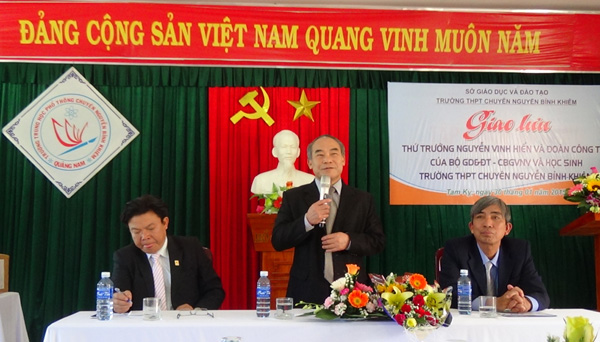

Băn khoăn với đổi mới giáo dục

Lần cập nhật cuối lúc Thứ ba, 03 Tháng 2 2015 08:26 Viết bởi Administrator Thứ ba, 03 Tháng 2 2015 07:03
Đoàn công tác của Bộ GD-ĐT do Thứ trưởng Nguyễn Vinh Hiển làm trưởng đoàn vừa có buổi giao lưu, trao đổi với cán bộ, giáo viên và học sinh Quảng Nam về những vấn đề liên quan đến đổi mới GD-ĐT theo tinh thần Nghị quyết 29. Tại đây, nhiều nhà giáo và học trò đất Quảng bày tỏ băn khoăn về các biện pháp giáo dục đang được triển khai.

Lúng túng dạy liên môn
Đổi mới căn bản và toàn diện GD-ĐT theo tinh thần Nghị quyết 29 được nhiều cán bộ quản lý giáo dục Quảng Nam quan tâm, trong đó nổi cộm là vấn đề dạy học liên môn và dạy học tích hợp. Theo Hiệu trưởng Trường THPT Lê Quý Đôn (Tam Kỳ) Trần Hữu Giã, giáo viên chỉ được đào tạo 1 môn nhưng việc đổi mới này đòi hỏi người dạy phải vận dụng nhiều môn nên gây khó khăn, lúng túng. Cùng chia sẻ về chủ đề này, thầy giáo Phạm Sỹ - Hiệu trưởng Trường THPT Sào Nam (Duy Xuyên) cho rằng hiện nay các trường “mạnh ai nấy làm” nên rất cần có sự chỉ đạo thống nhất từ bộ. Giải đáp thắc mắc này, Vụ trưởng Vụ Giáo dục phổ thông (Bộ GD-ĐT) Vũ Đình Chuẩn cho biết tùy theo từng trường, từng lớp, từng đối tượng học sinh (HS) mà giáo viên, trường học chủ động đưa ra chương trình, kế hoạch riêng cho phù hợp. Nếu HS chỉ học trong sách giáo khoa thì chưa đạt yêu cầu mà đòi hỏi phải vận dụng kỹ năng, tích hợp nhiều môn để giải quyết những vấn đề cụ thể.

Quang cảnh buổi giao lưu của đoàn công tác Bộ GD-ĐT với giáo viên và học sinh Trường THPT chuyên Nguyễn Bỉnh Khiêm. Ảnh: X.P
Một trong những vấn đề không còn mới nhưng vẫn thu hút sự quan tâm của nhiều người hiện nay đó là việc thực hiện Thông tư 30 của Bộ GD-ĐT. Trưởng phòng GD-ĐT TP.Tam Kỳ Trần Ngọc Sơn đề nghị Bộ GD-ĐT cần sớm có hướng dẫn điều chỉnh những tồn tại, bất cập của Thông tư 30 để thuận lợi cho cơ sở triển khai. Ông Sơn cũng băn khoăn việc HS lớp 5 đang học chương trình trường học mới (VNEN) sang năm lên lớp 6 có còn được học và đánh giá theo chương trình VNEN nữa không? Vụ trưởng Vụ Giáo dục tiểu học (Bộ GD-ĐT) Phạm Ngọc Định cho rằng trước đây giáo viên tiểu học vẫn sử dụng nhiều hồ sơ, sổ sách và nhận xét khi chấm điểm nhưng hiện nay do nhiều trường khá máy móc không đúng tinh thần thông tư hướng dẫn khiến cho giáo viên cảm thấy bị áp lực. Còn việc dạy học VNEN đối với lớp 6, hiện tại cả nước có 6 địa phương đang triển khai thực hiện thí điểm. Nếu Quảng Nam muốn triển khai trong năm học đến thì đăng ký với Bộ GD-ĐT để được hỗ trợ.
Với sự thay đổi căn bản của kỳ thi tốt nghiệp THPT và tuyển sinh đại học năm nay, do đó không ngạc nhiên khi một số cán bộ quản lý trường học bày tỏ băn khoăn với Bộ GD-ĐT. Hiệu trưởng Trường THPT Tiểu La (Thăng Bình) Nguyễn Công Luận cho biết đến nay nhà trường rất lúng túng về kỳ thi sắp tới, còn Hiệu trưởng Trường THPT Tây Giang Đinh Văn Tư băn khoăn về địa điểm thi của HS ở các huyện miền núi chỉ có nguyện vọng xét tốt nghiệp THPT. Lo ngại của thầy Tư là hoàn toàn chính đáng bởi học trò miền núi, nhất là ở huyện Tây Giang nếu thi tại cụm trường như trước đây sẽ rất khó khăn cho việc đi lại, ăn ở. Trao đổi với PV.Báo Quảng Nam, Hiệu trưởng Trường THPT Hùng Vương (Thăng Bình) Võ Đăng Thể cho biết sự thay đổi xoành xoạch về kỳ thi tốt nghiệp và tuyển sinh của Bộ GD-ĐT khiến ngay cả những người trong cuộc cũng không “chạy” theo kịp huống gì HS, phụ huynh. “Cho đến nay, Bộ GD-ĐT vẫn chưa có quyết định cuối cùng về kỳ thi sắp tới nên rất lúng túng. Ngay cả chuyện ôn tập cho học trò để chuẩn bị cho kỳ thi cũng khá chung chung” - thầy Thể chia sẻ.
Nhiều câu hỏi thú vị
Thứ trưởng Bộ GD-ĐT Nguyễn Vinh Hiển cũng đã có hơn 1 giờ đồng hồ để giao lưu với thầy cô giáo và học trò Trường THPT chuyên Nguyễn Bỉnh Khiêm. Dù thời gian khá ít, tuy nhiên đã có 17 ý kiến của HS, trong đó nhiều câu hỏi rất bất ngờ và thú vị, đúng “chất” học trò trường chuyên. Chẳng hạn, có em hỏi tại sao HS sẽ học nhiều ngành nghề khác nhau nhưng thi đại học chỉ thi chung 1 đề? Chương trình giáo dục hiện nay nhiều môn không sát thực tế, không được áp dụng sau này khi lên đại học nhưng buộc HS phải học gây áp lực nặng nề. Cũng có nhiều đề nghị của các em khiến cho không ít người phải bất ngờ như Bộ GD-ĐT cần quan tâm hơn đến giáo dục giới tính, tăng cường kỹ năng sống cho HS hay cần có giải pháp để nâng cao chất lượng đầu vào của tuyển sinh ngành sư phạm trước thực tế HS giỏi hiện nay rất ít lựa chọn ngành học này. Có em còn mạnh dạn đặt vấn đề với Thứ trưởng Nguyễn Vinh Hiển rằng ở nước ngoài hiện nay coi trọng tính thực tiễn trong dạy - học và nên chăng bộ có thể cho Trường THPT chuyên Nguyễn Bỉnh Khiêm triển khai thí điểm cách học này. Một số giáo viên cũng chia sẻ băn khoăn về kỳ thi sắp tới, về sự lãng phí khi HS chuyên Lý hay Toán nhưng thi vào học ngành y khoa hoặc ngành khác mà không theo học tiếp môn học ở trường chuyên. Có ý kiến cho rằng trường chuyên hiện nay đang bị áp lực rất lớn để có được kết quả cao tại kỳ thi HS giỏi quốc gia và Bộ GD-ĐT có giải pháp nào để giảm bớt áp lực?
Theo Vụ trưởng Vụ Giáo dục phổ thông Vũ Đình Chuẩn, không có chương trình cứng nào cho trường chuyên vì như vậy sẽ không thể có được nhân tài. Với HS giỏi quốc gia, ông Chuẩn cho rằng đây là sân chơi trí tuệ và hiện nay các trường cần phải thay đổi tư duy, cách nghĩ là phải có giải vì số lượng giải có hạn, trường này có thì trường kia không. Tuy nhiên, trả lời này không nhận được sự đồng tình của nhiều giáo viên bởi hiện nay, có thể nói thước đo đối với trường chuyên là giải thưởng HS giỏi quốc gia. Thậm chí, theo quy định của nhiều địa phương và cả Quảng Nam, sau 3 năm không có HS đoạt giải quốc gia, giáo viên coi như chưa hoàn thành nhiệm vụ và sẽ bị chuyển ra khỏi trường.
Theo Thứ trưởng Bộ GD-ĐT Nguyễn Vinh Hiển, đổi mới giáo dục quan trọng nhất là đổi mới chính mình. Việc đổi mới kiểm tra, đánh giá là nhằm phát hiện, động viên HS; đánh giá sự tiến bộ của học trò, hôm nay hơn hôm qua, cuối tháng hơn đầu tháng, cuối năm học hơn đầu năm học. Trường chuyên là nơi đào tạo nhân tài nên nhu cầu dạy lý thuyết và kiến thức hàn lâm nhiều hơn. Trong học tập, không có việc gì chỉ giải quyết dựa trên 1 môn mà cần tích hợp nhiều môn. Riêng với giáo dục kỹ năng sống, giới tính thì hiện nay nhà trường đang giảng dạy, tuy nhiên, đây là việc học hàng ngày, tại bất cứ đâu chứ không chỉ ở trường học.
XUÂN PHÚ (baoquangnam.com.vn)
itnbk.edu.vn
- itnbk.edu.vn
- 16/03/2016 16:09 - Chỉ tiêu tuyển sinh vào 21 trường quân đội năm 201…
- 08/10/2015 00:00 - Gameshow truyền hình: Học trò xứ Quảng của QRT thắ…
- 22/07/2015 15:14 - Tra cứu điểm thi THPT Quốc gia năm 2015
- 02/04/2015 10:22 - Bộ Giáo dục công bố đề thi minh họa kỳ thi THPT qu…
- 27/02/2015 00:00 - 10 điểm nổi bật của quy chế kỳ thi THPT quốc gia
- itnbk.edu.vn
- 31/01/2015 07:37 - Thứ trưởng Bộ GD-ĐT Nguyễn Vinh Hiển làm việ…
- 26/01/2015 16:59 - Bộ trưởng Bộ GĐ-ĐT chốt 10 điểm về kỳ thi quốc gia
- 11/11/2014 07:22 - Ra quân dọn vệ sinh hưởng ứng ngày Đô thị Việt Nam
- 18/10/2014 07:08 - Sáng tạo trẻ chuyên Nguyễn Bỉnh Khiêm
- 25/09/2014 00:00 - Những người trẻ mê thiên văn học